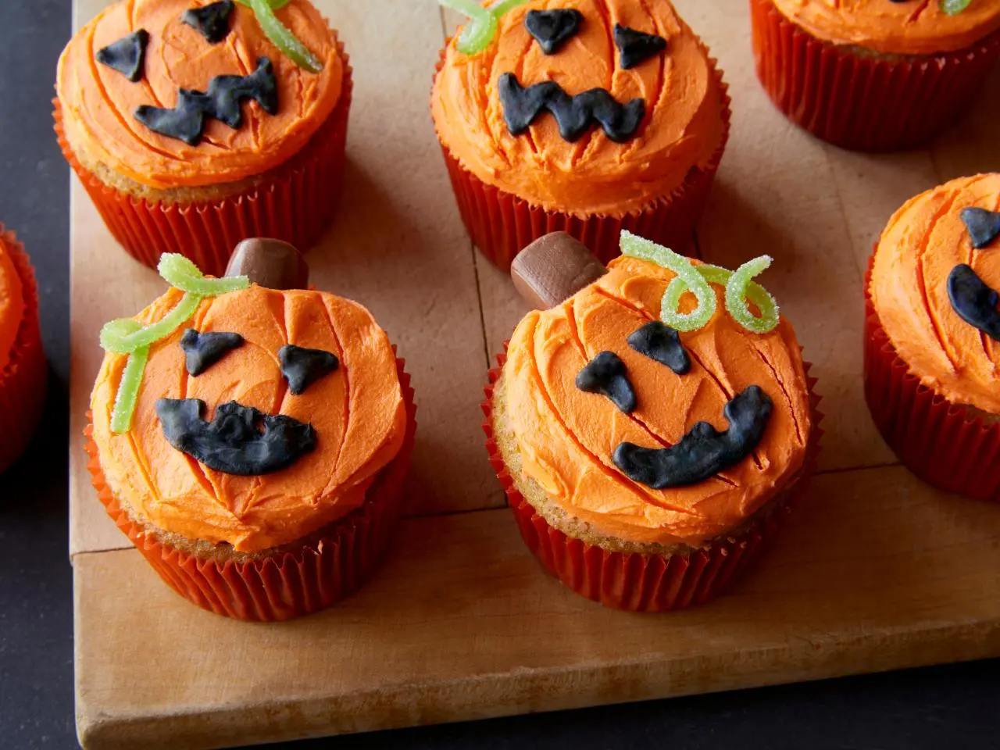

PUMPKIN MAGIC
Jack-o'-Lantern Cupcakes
Soft pumpkin cupcakes topped with orange frosting and spooky jack-o'-lantern faces.
⏱ 2 hours & 5 minutes total
View Recipe
Ingredients
Cupcakes:
- 2 cups granulated sugar
- 2 sticks(16 tablespoons) unsalted butter
- 4 large eggs
- 1 cup milk
- 2 teaspoons pure vanilla extract
- 2 cups all-purpose flour
- 2/3 cups almond flour
- 2 teaspoons baking powder
- 1 teaspoon pumpkin pie spice
- 1 teaspoon kosher salt
- Orange frosting and chocolate icing
Frosting:
- 2 sticks (16 tablespoons) unsalted butter at room temperature
- 1/4 teaspoon kosher salt
- 2 1/2 cups confectioners' sugar
- 5 tablespoons milk, at room temperature
- 1 teaspoon orange gel food coloring
Decorations:
- 6 chewy candy chocolate rolls, cut into quarters
- 2 green sour gummy belt candies, cut into 1/8-inch strips lengthwise
Royal Icing:
- 2 cups confectioners' sugar
- 1 tablespoon meringue powder
- 2 tablespoons black gel food coloring
- 3 tablespoons water
Instructions
- Preheat the oven to 350°F (176°C) for the cupcakes. Line two 12-cup muffin tins with orange paper liners.
- Melt the butter in a small skillet over medium heat; cook and swirl the pan occassionally until the butter browns(around 6-9 minutes). Immediately move the butter to a medium bowl and let cool slightly. Whisk in the eggs, granulated sugar, milk, and vanilla.
- Whisk the all-purpose and almond flour, baking powder, pumpkin pie spice, and salt in an large bowl. Add the brown butter mixture and whisk until just combined(do not overmix).
- Divide the batter among the prepared muffin cups and fill them three quarters of the way. Bake until the tops of the cupcakes sping back when gently pressed(around 18-22 minutes). Let the cupcakes cool in the pan for 5 minutes, then remove to a rack to cool completely.
- For the frosting: Beat the salt and butter until smooth and flurry(if using an electric mix, beat on medium-high speed). Reduce the speed to low and add confectioners' sugar, about 1 cup at a time. Increase the speed after each cup of confectioners' sugar added, beating until fluffy again, scraping down the sides of the bowl occassionally. Add the milk, vanilla, and orange foo coloring and beat until smooth.
- For the decorations: Pipe the frosting onto the cupcakes with a round pastry tip. Level the cupcake tops with an offset spatula to even and smooth layer. Use a toothpick or small skewer next to create "grooves" in the frosting to look like a pumpkin. Insert one of the chew chocolate quarter on the top of the cupcakes to look like the stem, and a draped sour gummy belt to look like the vine. Repeat for all remaining cupcakes and candy, then refrigerate untiil the frosting is slightly firm(around 15 minutes).
- For the royal icing: Whisk together the confectioners' sugar and meringue powder in a large bowl. Add 3 tablespos water and beat until soft, glossy peaks form(using a mixer on medium-hih speed), adding 1 more tablespoon water if necessary(should be thick, but pipable). add black gel food coloring until very black. Cover the bowl with a damp paper towel and plastic wrap to prevent icing from drying out until ready to use (Makes about 1 cup).
- Transfer the royal icing to a piping bag fitted with a sall round tip. Using the piping bag, pipe jack-o-latern faces on each cuppcake. Set aside until royal icing has set(around 30 minutes)